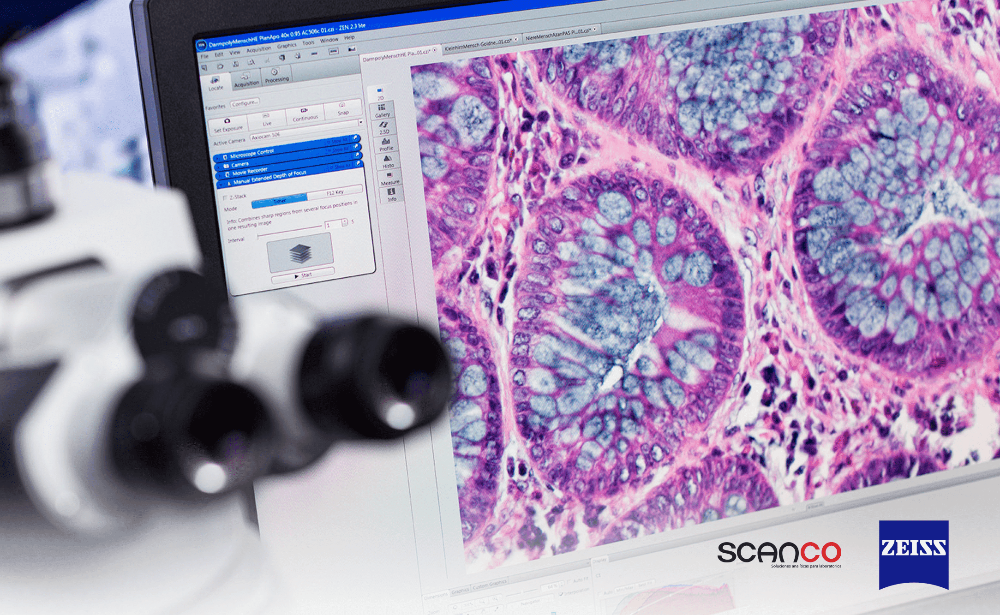
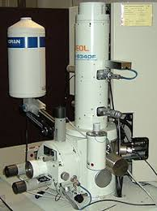
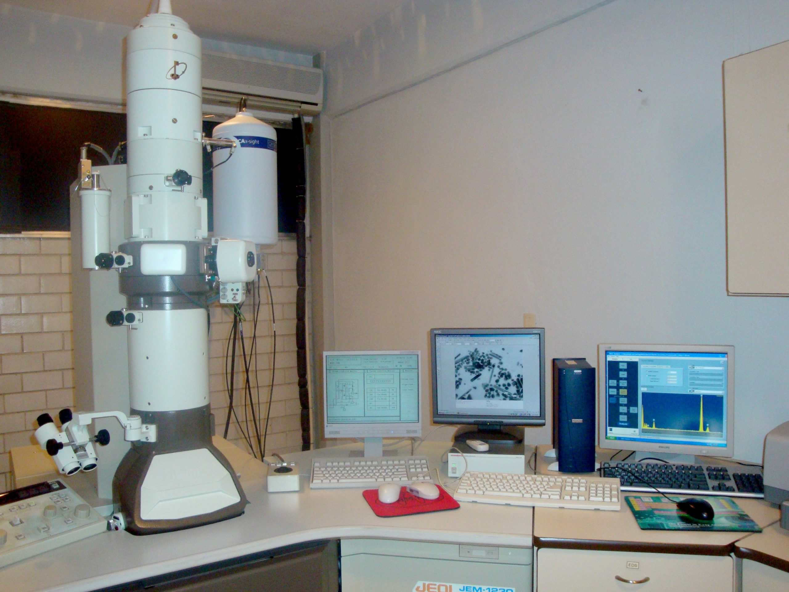

Liceo en ciencia y tecnologia de occidente "Las Águilas"
Microscopía
La microscopía es una técnica fundamental en la ciencia que permite observar estructuras que son invisibles a simple vista. Gracias a los microscopios, se han logrado grandes avances en biología, medicina y otras disciplinas. En este trabajo se abordarán los tipos de microscopios, su funcionamiento y su importancia en el estudio de las células.

Objetivos
Objetivos Específicos
- Diferenciar los términos relacionados con la microscopía.
- Conocer las partes y el funcionamiento del microscopio óptico compuesto.
- Analizar la importancia del microscopio electrónico en la investigación científica.
Marco Conceptual
Diferenciación de términos
- Microscopio: Instrumento que permite observar objetos demasiado pequeños para ser vistos a simple vista.
- Microscopía: Ciencia que estudia el uso y funcionamiento de los microscopios.
- Amplificación de la imagen: Capacidad del microscopio para aumentar el tamaño de un objeto observado.
- Resolución: Capacidad de distinguir detalles finos en una imagen.
- Reflexión: Cambio de dirección de la luz al chocar con una superficie.
Microscopio óptico compuesto (MOC)
-
Partes del MOC:
- Ópticas: Oculares, objetivos, condensador.
- Mecánicas: Base, tubo, tornillos de enfoque.
- Manejo y mantenimiento: Se debe limpiar con cuidado y evitar golpes.
- Formación de la imagen: La luz atraviesa la muestra y es amplificada por los lentes.
- Poder de resolución: Determina qué tan nítida se ve la imagen.
- Importancia en el estudio de la célula: Permite analizar estructuras celulares y procesos biológicos.
Microscopio electrónico
-
Tipos:
- De barrido: Genera imágenes tridimensionales de la superficie de los objetos. 
- De transmisión: Permite observar el interior de las células con gran detalle. 
- Poder de resolución: Mucho mayor que el del microscopio óptico.
- Importancia en el estudio de la célula: Ha permitido descubrir organelos y estructuras subcelulares.
Conclusión
La microscopía es esencial para la biología y otras ciencias. Gracias a los microscopios ópticos y electrónicos, se han logrado avances en el conocimiento de las células y su funcionamiento.
En conclusión, la microscopía es una disciplina esencial para el estudio de la vida a nivel microscópico. Su evolución ha permitido expandir nuestro conocimiento sobre la célula y sus funciones, proporcionando herramientas indispensables para la investigación científica y médica.
Bibliografía
- Alberts, B., Johnson, A., Lewis, J., Raff, M., Roberts, K., & Walter, P. (2002). Biología Molecular de la Célula. Editorial Médica Panamericana.
- Prescott, L., Harley, J., & Klein, D. (2004). Microbiología. McGraw-Hill.
- Karp, G. (2010). Biología Celular y Molecular. McGraw-Hill.
- Martínez, J. (2018). "Principios de microscopía óptica y electrónica". Revista de Ciencias Biológicas, 12(2), 45-58.
- National Institutes of Health (NIH). (2023). Microscopy Techniques. Recuperado de: nih.gov